Resources - Patterns
Included With The GIMP
More than just a bunch of tools, The GIMP has stuff too ....
this is the beginning
3D Green
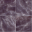Amethyst
Big Blue
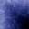Blue Grid

Blue Squares
Blue Web
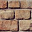Bricks
Burlap
Burlwood
Chocolate Swirl
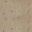Cork board
Crack
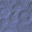Craters
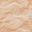Crinkled Paper
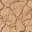Dried mud
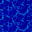Electric Blue
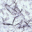Fibers
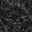Granite #1
Ice
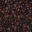Java
Leather
Leopard
Lightning
Maple Leaves
Marble #1
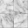Marble #2
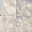Marble #3
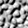Nops
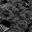One Small Step...
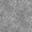Paper
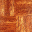Parque #1
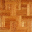Parque #2
Parque #3
Pastel Stuff
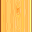Pine
Pine?
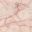Pink Marble
Pool Bottom
Qbert
Rain
Red Cubes
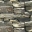Rocks
Sky
Slate
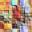Small Squares
Starfield
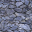Stone
Terra
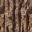Tree Bark
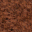Walnut

Warning!
Wood
Wood #1
Wood #2

Wood of some sort
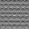recessed